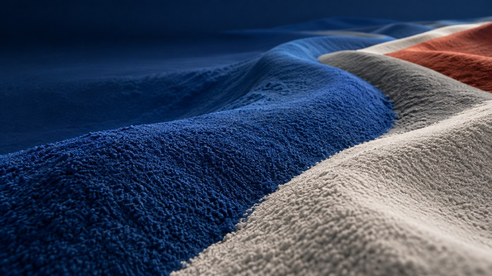

Our Company
회사 소개
대양피엔티㈜는 1993년 창업 이래 분체도료 한 우물을 파온 제조기업입니다. 김포 본사와 포천 1·2공장을 통해 안정적인 생산 체계를 갖추고, 건축·가전·자동차·산업 설비 전 분야에 맞춤 분체도료를 공급합니다.
Company

Our Company
대양피엔티㈜는 1993년 창업 이래 분체도료 한 우물을 파온 제조기업입니다. 김포 본사와 포천 1·2공장을 통해 안정적인 생산 체계를 갖추고, 건축·가전·자동차·산업 설비 전 분야에 맞춤 분체도료를 공급합니다.
Our Philosophy
자원의 가치를 되살리는 기술로, 지속 가능한 미래를 만들어 갑니다.
사람과 자연을 위한 친환경 경영으로, 더 넓은 세계를 향해 나아갑니다.
지속적인 연구개발로 제품의 가치를 높이고, 더 나은 기술로 고객과 함께 성장합니다.

Business Vision
분체도료는 100% 고형분의 환경친화적 도료로서 VOC 배출 규제에 따른 휘발성 액상 도료의 대체품으로 매년 사용량이 증가하는 매력적인 도료 산업 시장이다.
분체도료 소비의 증가에 따라 발생되는 폐분체도료의 양도 증가하고 있으며, 이를 재활용하여 활용할 수 있는 여러 방법이 연구되고 있다.
자사는 분체도료 제조의 기술력을 확보하였으며, 이를 바탕으로 기존 분체도료 시장에서 우월한 가격 경쟁력을 확보하여 소비자와 생산자 간의 신뢰를 바탕으로 상호 이익 실현에 중심이 되어 국내 분체도료 시장의 벤치마킹 선두 모델로 성장할 것이다.
| 상호 | (주)대양피앤티 |
|---|---|
| 대표자 | 정영일 |
| 사업자등록번호 | 137-81-39878 |
| 소재지 | 경기도 김포시 하성면 애기봉로 774번길 39-17,22 (하성면 원산리 185-14,15) |
| 제1공장 | 포천시 일동면 화동로 1544-165 |
| 제2공장 | 포천시 일동면 화동로 1544-6 |
| TEL | 031)987-8587 |
| FAX | 031)982-8587 |
분체도료는 용제를 쓰지 않는 가루 형태의 도료입니다. 정전기로 금속에 붙인 뒤 오븐에서 녹여 도막을 만듭니다. 액상 도장 대비 아래 이점이 있습니다.